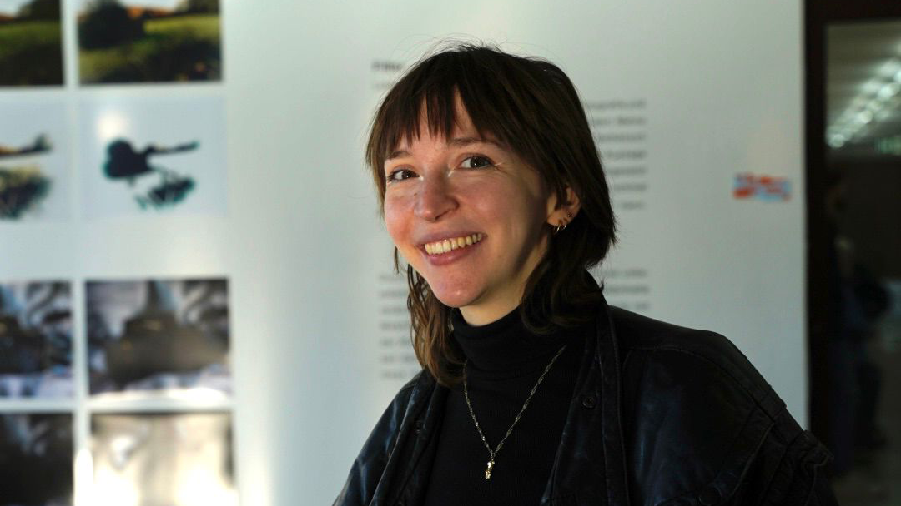

Fiona Giljohann is an interdisciplinary designer and creative technologist working at the intersection of art, culture, interactive media, and spatial experiences. Inspired by theatre and contemporary art from an early age, her work explores how audiovisual media, interaction, and spatial design can create new ways of experiencing and communicating cultural content. She studied Digital Media and Experiment at Bielefeld University of Applied Sciences, where she developed projects ranging from film and moving image to interactive installations, audiovisual performances, and immersive experiences. During an internship at Studio Louter in Amsterdam, she further developed her interest in exhibition design and cultural mediation, contributing to projects that combine storytelling, technology, learning, and spatial experience. She later completed her Master’s degree in Interactive Media Systems at the University of Applied Sciences Augsburg, focusing on Human–Computer Interaction, interactive installations, and experiential design. Alongside her studies, she worked in the digital division of Staatstheater Augsburg, gaining practical experience at the intersection of theatre, technology, and cultural production. Her projects often investigate how spaces can become active environments for participation, reflection, and emotional engagement. In her Master’s thesis *UN/SILENCED*, she developed a spatial audio installation exploring Female Rage as a collective and often silenced experience. Six voices transform the exhibition space into an environment in which movement, sound, and physical presence become part of the work.
Fiona is particularly interested in projects that connect art, technology, and culture in accessible and engaging ways — creating experiences that invite people not only to look, but to participate, question, feel, and discover.
